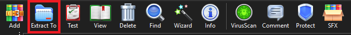
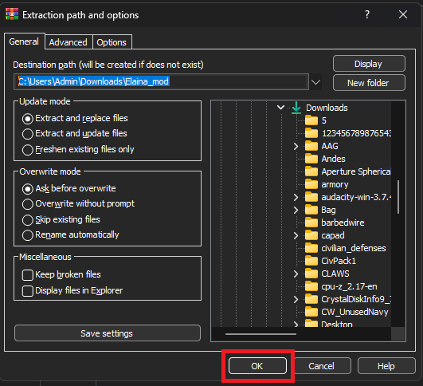
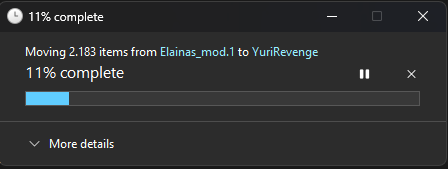
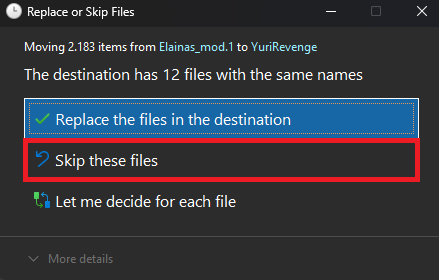
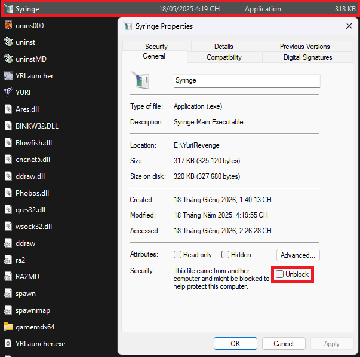
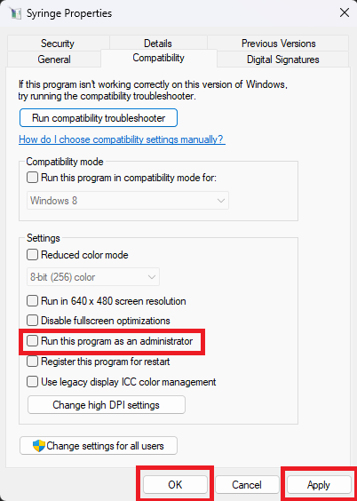
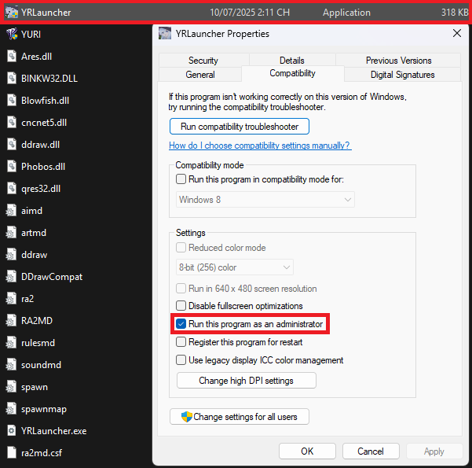
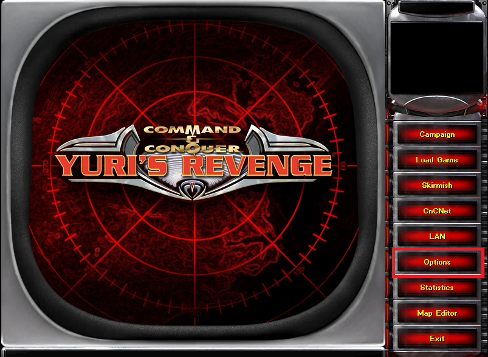
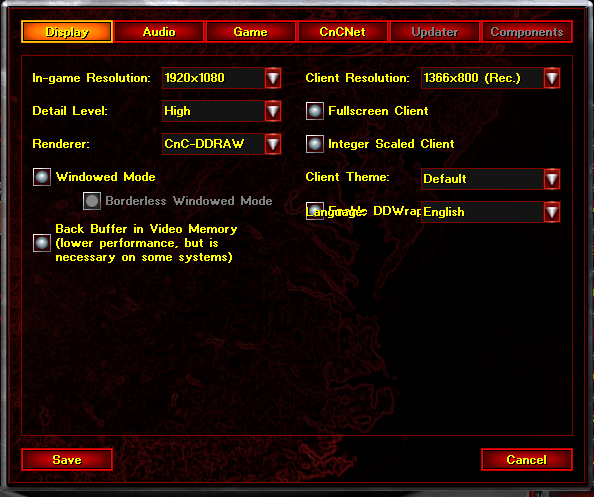
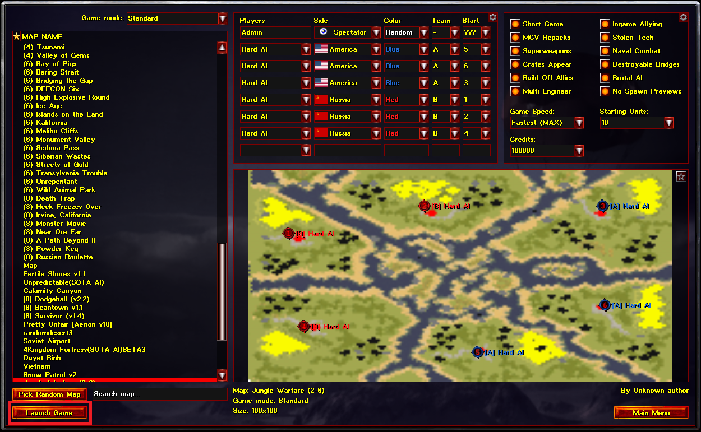

Double click the compressed MOD file and click the button above.

WinRAR will show this window, then click OK to start extracting. Once done, your PC will make a sound and you can see the extracted files in your chosen directory.

System is transferring files

Once finished, this prompt will appear, click SKIP.





You can customize In-game Resolution, Client Resolution, and Fullscreen mode.
